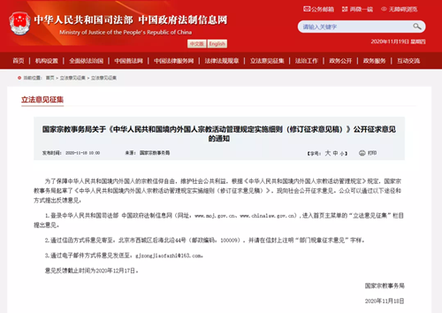

-
 手机版
手机版

-
 APP下载
APP下载
-
 微信
微信

手机版
APP下载
微信

为了保障中华人民共和国境内外国人的宗教信仰自由，维护社会公共利益，根据《中华人民共和国境内外国人宗教活动管理规定》规定，国家宗教事务局起草了《中华人民共和国境内外国人宗教活动管理规定实施细则（修订征求意见稿）》，现向社会公开征求意见。公众可以通过以下途径和方式提出反馈意见：
1.登录中华人民共和国司法部 中国政府法制信息网（网址：www.moj.gov.cn、www.chinalaw.gov.cn）,进入首页主菜单的“立法意见征集”栏目提出意见。
2.通过信函方式将意见寄至：北京市西城区后海北沿44号（邮政编码：100009），并请在信封上注明“部门规章征求意见”字样。
3.通过电子邮件方式将意见发送至：gjzongjiaofazhi@163.com。
意见反馈截止时间为2020年12月17日。
国家宗教事务局
2020年11月18日

附：中华人民共和国境内外国人宗教活动管理规定实施细则（修订征求意见稿）
第一章 总则
第一条 根据《中华人民共和国境内外国人宗教活动管理规定》，制定本实施细则。
第二条 本实施细则所称外国人，是指依照《中华人民共和国国籍法》的规定，不具有中国国籍的人。
第三条 本实施细则所称境内外国人宗教活动，是指外国人在中国境内按照其宗教信仰组织或者参加宗教仪式，以及与中国宗教团体、宗教院校、宗教活动场所和宗教教职人员进行宗教方面交往等。
第四条 中国尊重境内外国人的宗教信仰自由，依法保护境内外国人宗教活动。
第五条 境内外国人进行宗教活动，应当遵守中国的法律法规规章、尊重中国宗教独立自主自办原则、接受中国政府依法管理，不得利用宗教损害中国国家利益、社会公共利益和公民合法权益，不得违背中国的公序良俗。
第二章 集体宗教活动
第六条 境内外国人可以在寺院、宫观、清真寺、教堂（以下称寺观教堂）等宗教活动场所参加宗教活动。
第七条 境内外国人集体宗教活动应当在寺观教堂进行，由寺观教堂提供专场服务；寺观教堂不能够提供专场服务的，可以在省级人民政府宗教事务部门批准的外国人集体宗教活动临时地点（以下称临时地点）进行。
本实施细则所称境内外国人集体宗教活动，是指境内外国人组织的、有一定数量外国人参加的宗教活动，不包括本实施细则第二十条规定的情形。
前款规定的一定数量，由省级人民政府宗教事务部门确定。
第八条 境内外国人申请在寺观教堂组织集体宗教活动或者申请设立临时地点，应当推选三名以上召集人。
召集人应当遵守中国的法律法规规章，没有敌视中国的言行，没有不良记录，能够承担相应的法律责任，在中国居留许可期限还剩余六个月以上。
外国驻中国外交代表机构、领事机构成员以及其他享有特权和豁免的外国人，不得担任召集人。
第九条 境内外国人拟在寺观教堂组织集体宗教活动，应当由召集人向所在地市（地、州、盟）宗教团体提出书面申请。
市（地、州、盟）宗教团体根据申请和当地寺观教堂的情况，确定为境内外国人集体宗教活动提供专场服务的寺观教堂，并报设区的市级人民政府宗教事务部门备案。设区的市级人民政府宗教事务部门备案后，应当告知该寺观教堂所在地县级人民政府宗教事务部门。寺观教堂不具备提供专场服务条件的，市（地、州、盟）宗教团体应当书面答复召集人。召集人可以按照本实施细则的规定申请设立临时地点。
第十条 为境内外国人集体宗教活动提供专场服务的寺观教堂应当与召集人签订协议，明确集体宗教活动的时间安排、活动方式、活动次数、活动人数、安全措施、双方权利义务、法律责任等事项，并自协议签订之日起十日内报所在地设区的市级人民政府宗教事务部门备案。
第十一条 境内外国人在寺观教堂组织集体宗教活动，由该寺观教堂安排中国宗教教职人员主持；确需由外国宗教教职人员主持宗教活动的，该寺观教堂应当向所在地设区的市级人民政府宗教事务部门备案。
第十二条 申请设立临时地点，应当具备下列条件：
（一）拟在临时地点进行的活动能够遵守中国的法律法规规章，不妨碍周围单位和居民正常的生产、学习、生活，接受所在地宗教事务部门的管理；
（二）对拟作为临时地点的建筑设施具有使用权；
（三）拟作为临时地点的建筑设施符合规划、建设、消防、建筑安全等法律规定，适合进行集体宗教活动。
第十三条 申请设立临时地点，召集人应当填写境内外国人集体宗教活动临时地点申请表，同时向申请设立临时地点所在地省级人民政府宗教事务部门提交下列材料：
（一）市（地、州、盟）宗教团体出具的寺观教堂不具备提供专场服务条件的书面答复；
（二）所信仰宗教的主要经典，该宗教基本情况的说明；
（三）拟参加集体宗教活动的境内外国人的姓名、国籍、现居住地、中国签证或者居留许可有效期等说明；
（四）召集人的承诺书；
（五）召集人的护照、中国签证和居留许可的原件及复印件；
（六）集体宗教活动的时间安排、活动方式、活动次数、活动人数、安全措施等说明；
（七）对拟作为临时地点的建筑设施具有使用权的有效材料，以及该建筑设施符合国家消防、建筑安全等规定的材料。
前款所要求提交的材料除第二项中所信仰宗教主要经典外应当使用中文。宗教事务部门应当保护材料中涉及个人隐私的信息。
在第一款第四项的承诺书中，召集人应当代表拟在临时地点参加活动的外国人承诺，在临时地点的活动遵守中国的法律法规规章，不妨碍周围单位和居民正常的生产、学习、生活，接受所在地宗教事务部门的管理，临时地点的外部不设置宗教标志物。所有召集人均应当在承诺书上签字。
境内外国人集体宗教活动临时地点申请表式样由国家宗教事务局制作。
第十四条 省级人民政府宗教事务部门收到设立临时地点的申请材料后，征求拟设立临时地点所在地县级人民政府宗教事务部门、设区的市级人民政府宗教事务部门以及省、自治区、直辖市宗教团体的意见，自受理申请之日起二十日内作出批准或者不予批准的决定。
在县级行政区域内，对信仰同一宗教、能够使用同一语言进行集体宗教活动的，一般只批准一处临时地点。
临时地点有效期最长为二年。期满后仍需要在该临时地点举行集体宗教活动的，应当在期满三十日前按照本实施细则第十三条的规定重新申请。
第十五条 在临时地点的集体宗教活动，应当至少有一名召集人在现场负责管理。
召集人应当加强临时地点集体宗教活动的安全管理，参加活动人数不得超过临时地点批准文书中载明的活动人数。
第十六条 在临时地点的集体宗教活动，需要邀请中国宗教教职人员主持的，应当由召集人向临时地点所在地市（地、州、盟）宗教团体提出，由该宗教团体安排合适的宗教教职人员主持。
第十七条 除按照本实施细则规定安排或者邀请主持宗教活动的中国宗教教职人员外，境内外国人组织的集体宗教活动，仅限于境内外国人参加。
第十八条 为境内外国人集体宗教活动提供专场服务的寺观教堂和临时地点建筑设施的提供方应当主动了解外国人集体宗教活动情况，发现有违反中国法律法规规章的行为，应当及时向所在地宗教事务部门或者其他相关部门报告。
第十九条 召集人需要变更的，应当在拟变更十日前报所在地设区的市级人民政府宗教事务部门或者省级人民政府宗教事务部门备案。变更后的召集人应当符合本实施细则第八条规定的条件，并提供本实施细则第十三条第一款第五项规定的材料。
临时地点的时间安排、活动方式、活动人数需要变更的，应当向省级人民政府宗教事务部门提出变更申请。
第二十条 境内外国人经所在地宗教团体同意，可以邀请中国宗教教职人员按宗教习惯为其举行洗礼、婚礼、葬礼和道场、法会等宗教仪式。
第二十一条 境内外国人不得进行下列涉宗教的活动：
（一）干涉和支配中国宗教团体、宗教院校、宗教活动场所的事务，干涉宗教教职人员的认定和管理；
（二）成立宗教团体，设立宗教办事机构、宗教活动场所或者宗教院校；
（三）宣扬宗教极端思想，支持、资助宗教极端主义和非法宗教活动，利用宗教破坏中国国家统一、民族团结和进行恐怖活动；
（四）在中国公民中非法传教、发展信徒或者接受中国公民宗教性的捐赠；
（五）开展宗教教育培训；
（六）其他涉宗教的违法活动。
第三章 宗教交往
第二十二条 境内外国人可以通过中国全国性宗教团体或者省、自治区、直辖市宗教团体与宗教团体、宗教院校和宗教活动场所等进行宗教方面的友好往来和文化学术交流活动。
第二十三条 以宗教教职人员身份入境的外国宗教教职人员，经中国全国性宗教团体或者省、自治区、直辖市宗教团体邀请，可以在寺观教堂讲经、讲道。
第二十四条 以其他身份入境的外国宗教教职人员，经全国性宗教团体或者省、自治区、直辖市宗教团体邀请，拟在寺观教堂讲经、讲道的，应当符合下列条件：
（一）遵守中国的法律法规规章，尊重中国宗教独立自主自办原则，没有敌视中国的言行，没有宗教极端思想倾向；
（二）拟讲授的内容不违反中国的法律法规规章，不干涉中国的宗教事务，不违背中国的公序良俗。
全国性宗教团体和省、自治区、直辖市宗教团体应当分别向国家宗教事务局和省级人民政府宗教事务部门提出申请，提交下列材料：
（一）申请书，内容包括邀请理由、拟安排讲经、讲道的寺观教堂的情况；
（二）被邀请人的有关背景情况、宗教教职身份、入境身份说明及拟讲授的主要内容；
（三）拟安排讲经、讲道的寺观教堂书面同意的材料。
国家宗教事务局、省级人民政府宗教事务部门应当自受理申请之日起二十日内，作出批准或者不予批准的决定。
第二十五条 外国人同中国宗教团体、宗教院校、宗教活动场所开展宗教文化学术交流活动，携带超出本人自用数量的宗教印刷品、宗教音像制品和其他宗教用品入境，应当符合下列条件：
（一）所携带的宗教印刷品、宗教音像制品和其他宗教用品不含有危害中国国家安全和社会公共利益以及违背中国宗教独立自主自办原则等内容；
（二）宗教印刷品、宗教音像制品和其他宗教用品接收单位是中国宗教团体、宗教院校或者宗教活动场所；
（三）所携带的宗教印刷品、宗教音像制品和其他宗教用品符合宗教文化学术交流项目或者协议需要；
（四）经全国性宗教团体或者省、自治区、直辖市宗教团体同意。
宗教印刷品和宗教音像制品自用数量的范围指，单行本发行的出版物每人每次十册（份）以下，成套发行的出版物每人每次三套以下。其他宗教用品自用数量的范围指，每种三个基本单位以下。
第二十六条 外国人携带超出本人自用数量的宗教印刷品、宗教音像制品和其他宗教用品入境，接收单位应当向所在地省级人民政府宗教事务部门提出申请，提交下列材料：
（一）申请书，内容包括该外国人以及宗教文化学术交流的情况介绍，所携带的宗教印刷品、宗教音像制品和其他宗教用品的目录、样品、数量及用途说明；
（二）宗教文化学术交流项目或者协议文本；
（三）全国性宗教团体或者省、自治区、直辖市宗教团体同意的书面材料。
接收单位为全国性宗教团体及其设立的宗教院校的，由全国性宗教团体将申请材料报国家宗教事务局。
国家宗教事务局、省级人民政府宗教事务部门应当自受理申请之日起二十日内，作出批准或者不予批准的决定。
第二十七条 外国人在中国境内招收以培养宗教教职人员为目的的留学人员，由中国全国性宗教团体或者省、自治区、直辖市宗教团体根据需要统筹安排并选派。
外国人不得在中国境内擅自招收以培养宗教教职人员为目的的留学人员。
外国人到中国宗教院校留学，应当经中国全国性宗教团体或者省、自治区、直辖市宗教团体同意。
第二十八条 外国人经中国宗教院校按照法定程序聘用，可以作为外籍专业人员到宗教院校讲学。
第二十九条 佛教、道教、伊斯兰教、天主教、基督教以外的外国宗教组织及其成员与中国政府部门或者宗教团体、宗教院校、宗教活动场所等交往的，应当符合下列条件：
（一）对中国友好；
（二）在所在国（地区）有合法地位或者身份；
（三）无不良记录；
（四）尊重中国宗教独立自主自办原则，拟在中国境内进行的交往活动不违反中国的法律法规规章。
中方单位应当向国家宗教事务局申请，提交下列材料：
（一）申请书，内容包括交往的目的、事项、时间、地点、人数；
（二）外国宗教组织及其成员和该宗教的基本情况，以及外国宗教组织及其成员符合前款所列条件的说明；
（三）中方单位及主要参加人员的基本情况。
国家宗教事务局应当自受理申请之日起二十日内，作出批准或者不予批准的决定。
第四章 法律责任
第三十条 公职人员在境内外国人宗教活动管理工作中滥用职权、玩忽职守、徇私舞弊，应当给予处分的，依法依规给予处分；构成犯罪的，依法追究刑事责任。
第三十一条 境内外国人有下列行为之一的，由宗教事务部门和其他有关部门依法予以处理；违反《中华人民共和国出境入境管理法》《中华人民共和国治安管理处罚法》等法律法规的，由公安机关依法予以处理；违反《中华人民共和国反间谍法》的，由国家安全机关依法予以处理；构成犯罪的，依法追究刑事责任：
（一）违反本实施细则第五条规定的；
（二）违反本实施细则第二十一条规定的；
（三）未经全国性宗教团体或者省、自治区、直辖市宗教团体邀请，擅自在寺观教堂讲经、讲道的；
（四）未经批准将超出本人自用数量的宗教印刷品、宗教音像制品和其他宗教用品携带入境或者通过其他手段运入境内的，或者入境的宗教印刷品、宗教音像制品和其他宗教用品有危害中国国家安全、社会公共利益或者违背中国宗教独立自主自办原则内容的；
（五）在中国境内擅自招收以培养宗教教职人员为目的的留学人员的。
境内外国人违反本实施细则第二十一条第二项的规定设立宗教活动场所、宗教院校的，依据《宗教事务条例》第六十九条第一款予以处理；违反第二十一条第四项的规定接受中国公民宗教性捐赠的，依据《宗教事务条例》第六十九条第二款予以处理；违反第二十一条第五项的规定开展宗教教育培训的，依据《宗教事务条例》第七十条第一款予以处理。
第三十二条 境内外国人擅自设立临时地点组织集体宗教活动的，依据《宗教事务条例》第六十九条第二款予以处理。
第三十三条 境内外国人在寺观教堂或者临时地点举行集体宗教活动违反本实施细则规定或者承诺书内容的，由宗教事务部门责令改正，召集人负有责任的，责令撤换召集人；情节严重的，责令寺观教堂停止为外国人集体宗教活动提供专场服务或者责令临时地点停止活动。
第三十四条 中国宗教团体、宗教院校、宗教活动场所违反本实施细则的，由宗教事务部门责令改正，拒不改正的，依据《宗教事务条例》第六十五条予以处理。
中国宗教教职人员违反本实施细则的，依据《宗教事务条例》第七十三条予以处理。
第三十五条 为境内外国人违法宗教活动提供条件的，依据《宗教事务条例》第七十一条予以处理。
第三十六条 对宗教事务部门的具体行政行为不服的，可以依法申请行政复议；对行政复议决定不服的，可以依法提起行政诉讼。
第五章 附则
第三十七条 在直辖市行政区域内，本实施细则规定的市（地、州、盟）宗教团体的职责，由直辖市区（县）宗教团体履行；县级人民政府宗教事务部门和设区的市级人民政府宗教事务部门的职责，由直辖市区（县）人民政府宗教事务部门履行。
第三十八条 县（市、区、旗）无相关宗教团体的，本实施细则规定的相应职责由市（地、州、盟）宗教团体履行。
市（地、州、盟）、直辖市区（县）无相关宗教团体的，本实施细则规定的相应职责由省、自治区、直辖市宗教团体履行。
省、自治区、直辖市无相关宗教团体的，本实施细则规定的相应职责由全国性宗教团体履行。
第三十九条 华侨在中国境内，台湾居民在大陆，香港、澳门居民在内地进行宗教活动，参照本实施细则执行。
第四十条 本实施细则自年 月日起施行。